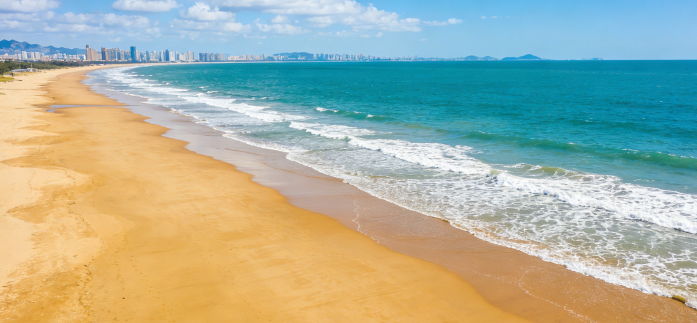
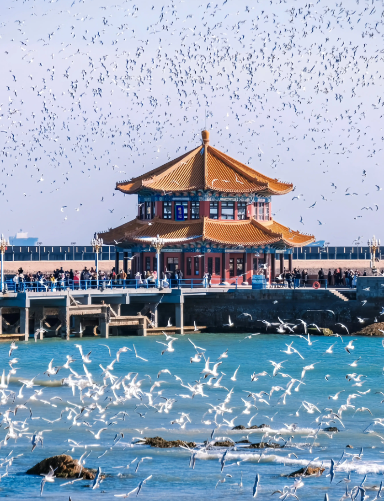

A journey through Qingdao's remarkable past
The Qingdao area has been inhabited since the Neolithic Age, home to the Dongyi people who were among the earliest civilizations in eastern China. Archaeological sites dating back over 6,000 years reveal a rich prehistoric culture with advanced pottery and jade craftsmanship.
During the Tang and Song dynasties, the area flourished as the Jiaozhou trading port, connecting China with maritime routes across East Asia. By the Ming Dynasty, coastal fortifications were built to defend against Japanese pirates, establishing Qingdao's strategic importance.
In 1897, Germany occupied Qingdao and transformed it into a modern port city. The Germans laid out the city plan, built the iconic red-tiled European architecture, constructed the railway to Jinan, and established the famous Tsingtao Brewery. This period shaped Qingdao's unique East-meets-West character.
After returning to Chinese sovereignty in 1922, Qingdao grew rapidly. Today it is a major economic hub, home to Fortune 500 companies like Haier and Hisense. The successful hosting of the 2008 Olympic Sailing Competition put Qingdao firmly on the world stage as an international sailing destination.
Modern Qingdao leads in marine science, technological innovation, and green development. The West Coast New Area, one of China's largest national new districts, symbolizes the city's ambition. Qingdao continues to balance rapid growth with environmental preservation, protecting its coastline and marine ecosystems.


Qingdao's old town is a living architectural museum where German colonial buildings stand alongside traditional Chinese structures. The red-tiled rooftops, cobblestone streets, and century-old churches create an atmosphere unlike anywhere else in China.
Walking through the winding alleys of the old town, you'll discover hidden courtyards, artisan workshops, and cozy cafes. The Catholic church on Zhejiang Road, with its twin spires, and the Protestant Church on Jiangsu Road are architectural masterpieces that have become iconic landmarks of the city.